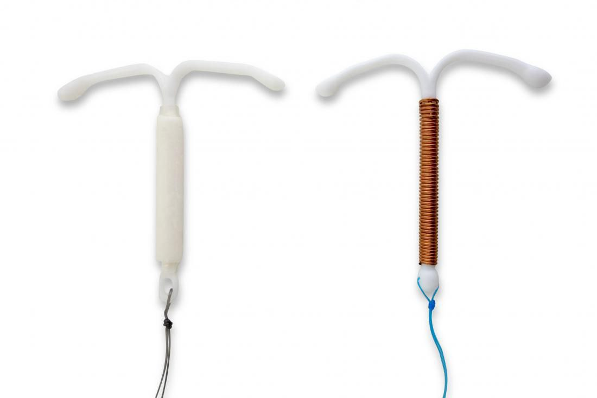

The IUCD contraceptive method is a type of birth control that involves inserting a device into the uterus to prevent pregnancy.
This method is also known as the intrauterine device.
...

Advantages of the IUCD contraceptive method include:
It is highly effective, with a failure rate of less than 1%.
It is long-acting, and can provide protection for several years depending on the type of device used.
It does not require daily attention or remembering to take a pill.
Disadvantages of the IUCD contraceptive method include:
It can cause side effects like cramping, bleeding, and discomfort during insertion or removal.
There is a small risk of infection or perforation during insertion.
It does not protect against sexually transmitted infections (STIs).
It is important to note that the IUCD contraceptive method does not protect against sexually transmitted infections (STIs).
Therefore, it is recommended to use a condom or other barrier method in addition to the device for STI protection.
It is also advised to speak to a healthcare provider before starting any birth control method to discuss the best
If you have any further questions, feel free to ask!
Our professionals are ready to help you